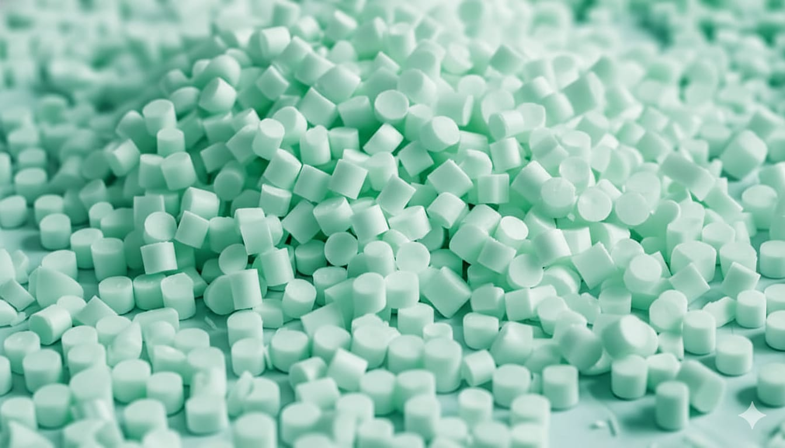

PP Reciclado pós indústria
Nossa matéria prima é originária apenas de aparas pós indústria , garantindo um material sem odor e sem contaminação.

Matéria prima reciclada de polipropileno.
Nossa matéria prima é originária apenas de aparas pós indústria , garantindo um material sem odor e sem contaminação.
Recebemos resíduos Plásticos pós indústria, com separação, controle e rastreabilidade.Trabalhamos com foco em consistência e segurança do processo.
Toda a nossa matéria prima é homogenizada e antes do envaze na embalagem , é feito testes para saber se o material está de acordo com oque o nosso cliente precisa.
Efetuamos testes de Fluidez, Dureza, Densidade e Umidade , garantindo a qualidade do produto antes de ser embalado.
Todos os materiais fornecidos a nossos clientes acompanham a ficha técnica com os ensaios obtidos em nosso laboratório , garantindo todas as informações da matéria prima enviada.
Oferecemos o fornecimento em embalagens adequadas para logística industrial , com padronização e organização para facilitar o recebimento e uso.